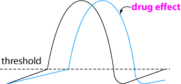

Class 4 antiarrhythmics - Calcium channel blockers

Note that some (verapamil, diltiazem) are
more specific (but not completely specific) for the heart and others (dihydropyridines:
nifedipine etc) are more specific for blood vessels (as vasodilators). They
block the inward Ca++ current across membranes of myocardial cells
and vascular smooth muscle. This inhibits both phase 4 of the action potential
and the contractile mechanisms of vascular and smooth muscle. They also slow
phase 0 in SA and AV nodes
Verapamil is the drug of choice for severe acute supraventricular tachyarrhythmias
and may help with atrial flutter or fibrillation.
Side effects
peripheral vasodilation - hypotension
decreases myocardial contractility
bradycardia
Contraindications
severe congestive heart failure
hypotension
sick sinus syndrome
2nd or 3rd AV block
digitalis intoxication
do not use with propanolol
Diltiazem is similar in most respects to verapamil except that it has more favourable pharmacokinetics, and has been reported to be more effective in feline idiopathic dilated myocardopathy than verapamil. It is usually preferred for long term oral use.
| 6 Cardiovascular index |
| |
copyright
Massey University
|